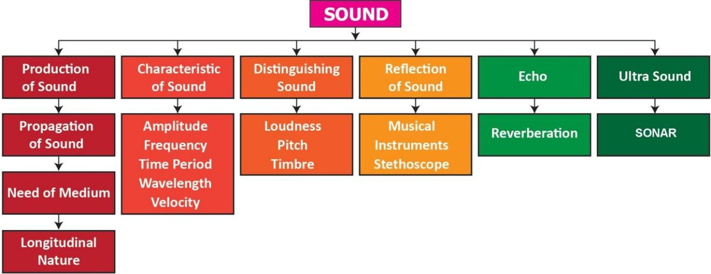

1. Which of the following vibrates when a musical note is produced by the cymbals in a orchestra question mark
A bracket closed stretched strings
b bracket closed stretched membranes c bracket closed air columns d bracket closed metal plates
2. Sound travels in air:
A bracket closed if there is no moisture in the atmosphere.
B bracket closed if particles of medium travel from one place to another.
C bracket closed if both particles as well as disturbance move from one place to another.
D bracket closed if disturbance moves.
3. A musical instrument is producing continuous note. This note cannot be heard by a person having a normal hearing range. This note must then be passing through
A bracket closed wax b bracket closed vacuum c bracket closed water d bracket closed empty vessel
4. The maximum speed of vibrations which produces audible sound will be in
A bracket closed sea water b bracket closed ground glass c bracket closed dry air d bracket closed human blood
5. The sound waves travel faster
A bracket closed in liquids b bracket closed in gases c bracket closed in solids d bracket closed in vacuum
1. Sound is a dash wave and needs a material medium to travel.
2. Number of vibrations produced in one second is dash.
3. The velocity of sound in solid is dash than the velocity of sound in air.
4. Vibration of object produces dash.
5. Loudness is proportional to the square of the dash.
6. dash is a medical instrument used for listening to sounds produced in the body.
7. The repeated reflection that results in persistence of sound is called dash.
Tunning fork |
The Point where density air is maximum |
Sound |
Maximum displacement from the equilibrium position |
Compressions |
The sound Whose frequency is greater than 20,000 Hz |
Amplitude |
Longitudinal wave |
Ultrasonics |
Production of sound |
1. Through which medium sound travels faster, iron or water question mark Give reason.
2. Name the physical quantity whose SI unit is ‘hertz’. Define.
3. What is meant by supersonic speed question mark
4. How does the sound produced by a vibrating object in a medium reach your ears question mark
5. You and your friend are on the moon. Will you be able to hear any sound produced by your friend question mark
1. Describe with diagram, how compressions and rarefactions are produced.
2. Verify experimentally the laws reflection of sound.
3. List the applications of sound.
4. Explain how does SONAR work question mark
1. The frequency of a source of sound is 600 Hz. Calculate the number of times it vibrates in a minute question mark
2. A stone is dropped from the top of a tower 750 m high into a pond of water at the base of the tower. Calculate the number of seconds for the splash to be heard question mark
Bracket OPEN Given g = 10 m s power minus 2 and speed of sound = 340 m s power minus 1bracket closed
1. Applied Physics – Rajasekaran S and others – Vikas Publishing House Pvt Ltd.
2. Fundamentals of Physics – Halliday, Resnick and Walker, Wiley India Pvt Ltd. NewDelhi.
www.britannica.com/science/ultrasonics
https://www.soundwaves.com/

ICT CORNER
Sound
Steps
Type the given URL to reach “pHET Simulation” page and download the “java” file of Sound.
Open the “java” file and plug in your headphone. Click “Audio enabled” box from right side to hear the sound waves.
Switch the tabs from the top to simulate various properties of sound waves. Watch the longitudinal sound waves from different interfaces by altering “Frequency” and “Amplitude”.
Alter “Air Density” and observe its effect on the sound waves. Use “Reset” to repeat the experiment.
Sound Simulator
URL: https://phet.colorado.edu/en/simulation/legacy/sound or Scan the QR Code.